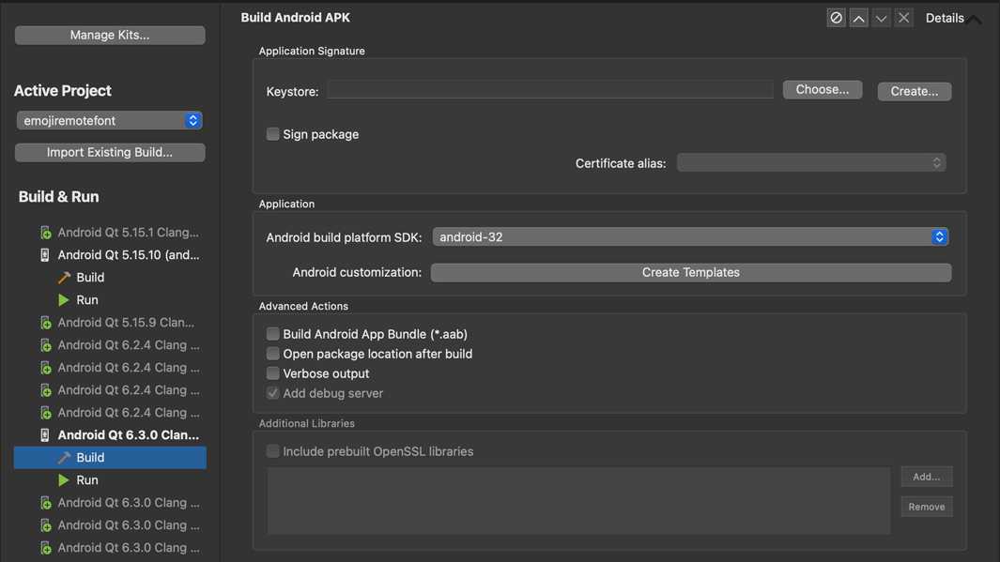
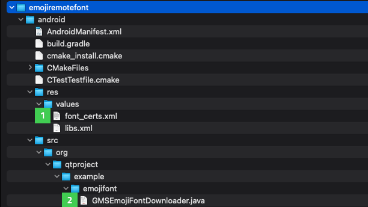

Supporting Google Emoji Font Policy
Google has introduced an Android: Android Emoji Policy which compels app developers to support the latest version of Unicode Emoji. The policy states:
Apps with custom emoji implementations, including those provided by third-party libraries, must fully support the latest Unicode version when running on Android 12+ within 4 months after new Unicode Emoji are released.
This guide shows how to support this policy by either bundling an emoji font or using Android: Google Downloadable Fonts.
Bundling an Emoji Font VS Google Downloadable Fonts
There are some advantages and disadvantages of both methods for supporting the latest emojis The best option depends on each app. Here are some advantages and disadvantages of the two methods:
Bundling font advantages:
- Faster loading of the font
- Works when the user does not have internet
- Works in all operating systems
- Independent (no other dependencies other from Qt)
- Simpler solution
Bundling font disadvantages:
- Increases the application size (NotoColorEmoji is ~10 MB)
- Requires updating the font on newer releases
- Older apps will not update emojis automatically
Google Downloadable Fonts advantages:
- Does not change the application size
- Updated automatically
- Multiple apps without any relationship share the same font
Google Downloadable Fonts disadvantages:
- Depends on Google Mobile Services
- Android only
- Will download the font if not previously cached
- Does not work without internet when not previously cached
- More complex than bundling the font
How to bundle a font
It is necessary to obtain and bundle the font and later to load it either using QML or C++.
Obtaining a Font
For this guide, we will be using the Google NotoColorEmoji font. NotoColorEmoji is a font licensed by SIL OPEN FONT LICENSE.
Note: If downloading from the repository, download the NotoColorEmoji_WindowsCompatible.ttf font instead of NotoColorEmoji.ttf. NotoColorEmoji.ttf is built internally with a different format and it is well supported only by Android/Chrome/Chromium OS. Since Qt runs on other platforms, Qt font loader requires a standard formed TrueType/OpenType font.
Adding the Font
The proper way to bundle the font is to add it to The Qt Resource System files. For example, you can make a separated resources file for the font - "font.qrc" with the NotoColorEmoji_WindowsCompatible.ttf. To embed the new resources file use the following code in CMakeLists.txt:
qt_add_big_resources(PROJECT_SOURCES font.qrc)
Loading the bundled font in C++
To load the font using C++, use QFontDatabase.
// Loading NotoColorEmoji bundled using C++ QFontDatabase QFontDatabase::addApplicationFont(QStringLiteral(":/NotoColorEmoji_WindowsCompatible.ttf"));
Note: The above code should be used before QQmlApplicationEngine loads the QML, so when the QML is loaded the font is already present and ready to use.
Loading the bundled font in QML
To load the font in QML, use FontLoader:
// Loading NotoColorEmoji using QML FontLoader FontLoader { source:"NotoColorEmoji_WindowsCompatible.ttf" }
Using Google downloadable fonts:
Using Google downloadable fonts for the emoji font provides an automatically updated emoji font without increasing application size. The process for downloading a font using the Downloadable Fonts feature can be seen in more detail in Android: Downloadable Fonts Process
For this guide, the process will be:
- C++ code starts
- C++ calls Java function
- Java calls GDF to fetch the font
- Java opens the font URI
- Java returns file descriptor to C++
- C++ loads the font using QFontDatabase
Configuration
Google Downloadable Fonts is available for API level 26 (Android 8.0). But it is possible to support earlier APIs down to API 14 if the app uses AndroidX.
Note: The Android documentation refers to the Android: Support Library instead of AndroidX. But since the support library is no longer maintained and is superseded by AndroidX, we followed Google's recommendation to use AndroidX instead.
Customizing the Android packages template
First, it is necessary to customize the Android package templates. For that, in Qt Creator, go to the Projects tab, and then search in the Build Settings for "Build Android APK". It should be inside "Build Steps", expand the details and a button called "Create Templates" will appear.

Click on "Create templates", follow the wizard, and in the end, a folder with several configuration files for Android will be created. By default, it will be a folder called android inside the project directory.
See Android Package Templates for information to how to customize the android templates using qmake.
In case that you are using CMake and Qt 6, like in this guide, you need to set the QT_ANDROID_PACKAGE_SOURCE_DIR property. Ex:
set_property(TARGET emojiremotefont PROPERTY
QT_ANDROID_PACKAGE_SOURCE_DIR
${CMAKE_CURRENT_SOURCE_DIR}/android)
Adding AndroidX
To add AndroidX open the build.gradle file inside QT_ANDROID_PACKAGE_SOURCE_DIR folder added above and add the dependency there:
dependencies {
implementation fileTree(dir: 'libs', include: ['*.jar', '*.aar'])
implementation 'androidx.appcompat:appcompat:1.4.1'
}
To use Androidx we need to set the according flag. For that create a file named gradle.properties inside QT_ANDROID_PACKAGE_SOURCE_DIR and add this line:
android.useAndroidX=true
Adding Font Provider Certificates
Since we are using AndroidX, there is another configuration required - adding Android: Font Provider Certificates. To use the GMS font provider, download the Android: GMS Font Provider Certificates. If using other font providers, you need to obtain the certificates from the Provider itself.
After downloading the file, add it to Android Resources (not the Qt Resource system) by copying it to the values folder in the android templates folder. The following image shows the correct folder on (1):

Java Code
Okay, let's dig into code now!
We need to add Java/Kotlin Code to our Android templates. Place it under the src folder in the android templates folder. You may need to create the src folder and the folder structure for your java files. You can see this folder structure in the Android Templates Folder image in the previous section in (2).
To obtain the font in C++, it is necessary for the Java code to:
- Create a Font Request
- Fetch the fonts from FontsContractCompat using the font request
- Get font Info and the font URI (content scheme file)
- Open the URI and obtain a File descriptor
- Return the file descriptor to C++ code
To create a font request, you need the font provider information (authority, package, and certificates) and search query for the font. For the certificates use the GMS Font Provider Certificates file fonts_cert.xml added previously to the Android resources.
// GMS fonts provider data private static final String PROVIDER_AUTHORITY = "com.google.android.gms.fonts"; private static final String PROVIDER_PACKAGE = "com.google.android.gms"; // Emoji font search query (copied from EmojiCompat source) private static final String EMOJI_QUERY = "emojicompat-emoji-font"; // Font Certificates resources strings (from fonts_certs.xml) private static final String FONT_CERTIFICATE_ID = "com_google_android_gms_fonts_certs"; private static final String FONT_CERTIFICATE_TYPE = "array"; (...) // obtain id for the font_certs.xml int certificateId = context.getResources().getIdentifier( FONT_CERTIFICATE_ID, FONT_CERTIFICATE_TYPE, context.getPackageName()); // creating the request FontRequest request = new FontRequest( PROVIDER_AUTHORITY, PROVIDER_PACKAGE, EMOJI_QUERY, certificateId);
Now, use the request just made to fetch the font:
// fetch the font FontsContractCompat.FontFamilyResult result = FontsContractCompat.fetchFonts(context, null, request);
Obtain the FontInfo and URI:
final FontsContractCompat.FontInfo[] fontInfos = result.getFonts(); final Uri emojiFontUri = fontInfos[0].getUri();
Open a new native File Descriptor from the URI:
final ContentResolver resolver = context.getContentResolver(); // in this case the Font URI is always a content scheme file, made // so the app requesting it has permissions to open final ParcelFileDescriptor fileDescriptor = resolver.openFileDescriptor(fontInfos[0].getUri(), "r"); // the detachFd will return a native file descriptor that we must close // later in C++ code int fd = fileDescriptor.detachFd(); // return fd to C++
Note: Everything coded in Java could be done in C++ using JNI. The code presented in the guide is simplified. Production-ready code must be checked, with exception catches, etc...
C++ Code
Ok all done on the java side. Let's go to the C++ side.
C++ is responsible for calling the Java code and using the file descriptor to load the font into Qt.
To get a deeper understanding of how communication between C++ and Java works in Qt 6 check the Qt Android Notifier example.
After obtaining the file descriptor from Java code, wrap the file descriptor into a QFile class and load the font file using QFontDatabase:
QFile file; file.open(fd, QFile::OpenModeFlag::ReadOnly, QFile::FileHandleFlag::AutoCloseHandle); QFontDatabase::addApplicationFontFromData(file->readAll());